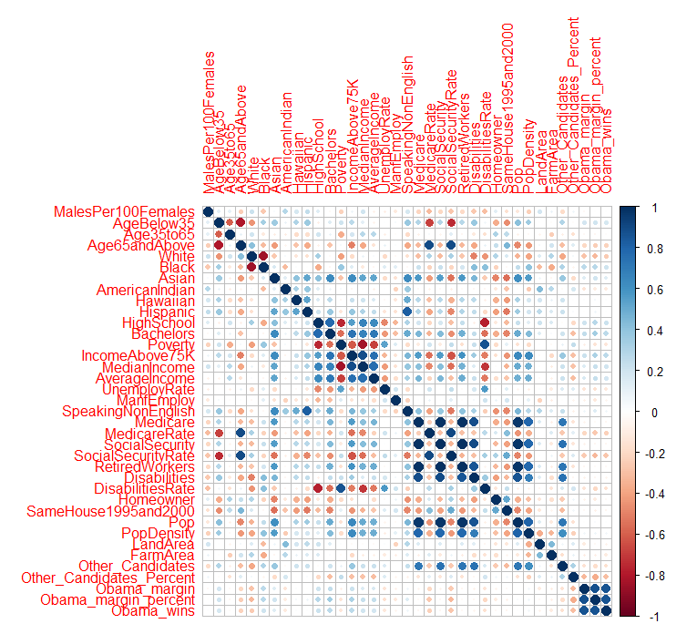
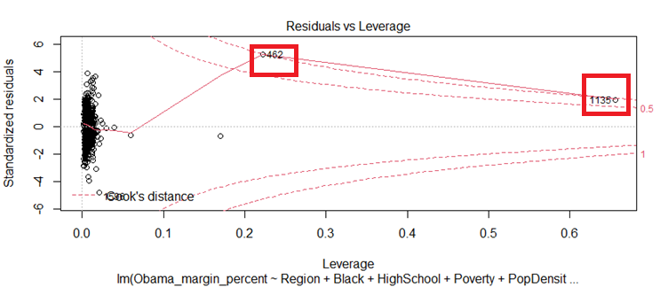
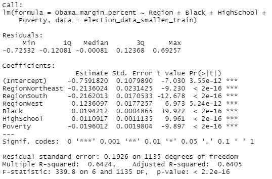
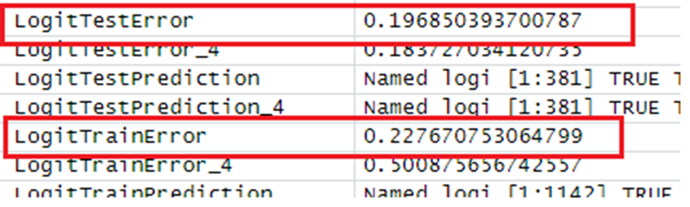
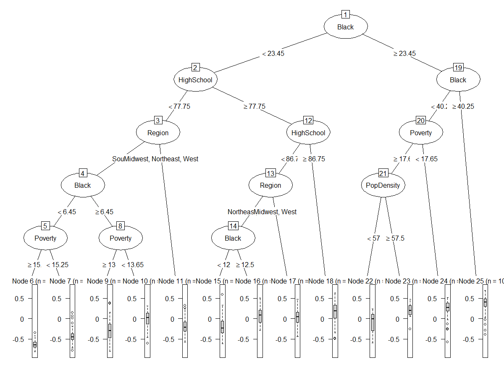
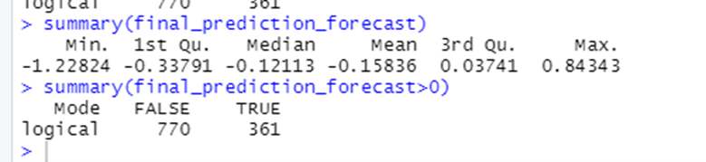

Predictive Analysis in R
The goal for this project was to build a predictive model that best forecast the results of the 2008 U.S. democratic primaries between Barack Obama and Hilary Clinton.- Accessed extensive demographic data from the U.S. Census Bureau. For each of the ~2900 counties information on average income, land area, ethnicity breakdowns, etc., was provided.
- Cleaned data set by imputing missing values and added category ObamaMarginPercent to show the victor in each county.
- Split data into training and test sets. Counties that had already voted before the data was collected (Feb. 19, 2008) made up the training set. The training set was further split to create a validation set to check for overfitting and potentially biased data.
- Created a correlation matrix using the training set to identify linked variables and those most associated with an Obama win.
- Generated multiple linear regression models with the target variable ObamaMarginPercent using the lm function. This was done to narrow down a model with the fewest and most significant variables that produce the highest R-squared value.
- Found highly correlated additional variables using the vif function (variable inflation factor) and removed to further specify the variables to be included. Five variables were included, however the variable for population density resulted in large outliers in counties like New York.
- The final model contained the four most predictive variables: region, poverty level, black population, and high school graduation level.
- Tested model training and test error to ensure generalizability. Found fairly high accuracy and low errors on both the training and validation data.
- Used the same four variables to create a logistic regression using the glm function. This model was found to be less predictive than the linear model.
- Generated a regression tree using the rpart function. This model was also less predictive than the original linear model.
- Ran the linear model on the unseen test data to predict primaries that had not yet taken place. The results of the prediction showed that Obama would lose in 770 of the upcoming 1131 primaries. These results can be attributed to the reduced rate of Black and high school graduated voters in the remaining counties.






Full code can be found in github repository here